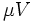

![[Main Page]](../../rsrc/bci2000logo.svg)
BCI2000 File Format
Technical Reference
A BCI2000 data file consists of a header and the actual raw brain signals.
Its associated file name extension is .dat.
The header consists of a definition of all system parameters and states.
Thus, parameter values cannot change within a run, which in turn corresponds to a single data file.
Header
The header of a data file consists of lines of ASCII characters, separated by a carriage return/line feed (CRLF) control character sequence typically present in DOS/Windows text files.
Its total length is given by the HeaderLen field in the first line.
The header contains meta information, state (event) definitions, and parameters.
Meta Information
The fields in the first line specify meta information required to access the binary data that follows the header.
Since version 1.1, the first line begins with a BCI2000V
field containing a floating point version number, and ends with a
DataFormat field describing the format of the binary data as
int16, int32, or float32.
A missing BCI2000V field indicates a file format version of
1.0, and a DataFormat of int16.
The number of bytes in the state vector is determined by the sum of the lengths (given in bits) for all states, rounded up to the next byte (which equals the value of StateVectorLength in both the first line and, since StateVectorLength is also a system-wide parameter, in one of the lines in the [ Parameter Definition ] section).
Thus, the first line contains all information required to read the binary information contained in the data file.
State Definitions
State definitions are preceded with a line [ State Vector Definition ], and given in the general State Definition format.
In the context of the file header, the state definitions' value fields are redundant since they match the values associated with the first sample in the data file.
Parameter Definitions
Parameter definitions are preceded with a line [ Parameter Definition ], and follow the general Parameter Definition format. They represent the respective parameters' values at the beginning of the recording.
Summary
BCI2000V= 1.1 HeaderLen= l SourceCh= m StateVectorLength= k DataFormat= f CRLF [ State Vector Definition ] CRLF Name1 Length1 Value1 ByteLocation1 BitLocation1 CRLF Name2 Length2 Value2 ByteLocation2 BitLocation2 CRLF Name3 Length3 Value3 ByteLocation3 BitLocation3 CRLF ... [ Parameter Definition ] CRLF Section1 DataType1 Name1= Value1 DefaultValue1 LowRange1 HighRange1 // Comment CRLF Section2 DataType2 Name2= Value2 DefaultValue2 LowRange2 HighRange2 // Comment CRLF Section3 DataType3 Name3= Value3 DefaultValue3 LowRange3 HighRange3 // Comment CRLF ... CRLF
Binary Data
The end of the header is marked by CRLF CRLF, and the binary data directly follows the last CRLF.
For each sample, data values for all channels are stored, followed by StateVectorLength bytes for the state vector.
Data samples are always stored in little endian byte ordering.
Their format depends on the DataFormat field:
| DataFormat field | data type |
|---|---|
| int16 | 2-byte signed integer |
| int32 | 4-byte signed integer |
| float32 | 4-byte floating point (IEEE 754) |
From the total file size, and the information present in the header's first line, the number of samples in a data file may be calculated as follows:
Required Parameters
These parameters will be present in any BCI2000 data file. While some of these parameters are required to interpret a data file's content (source parameters), others reflect information about external circumstances (storage parameters), or internal housekeeping (system parameters).
Section Source
The parameters in this section are required to be present in any BCI2000 data file. These parameters are necessary to interpret the raw data contained in the file, and are thus belonging into section Source.
| Type | Parameter Name | Description |
|---|---|---|
| int | SampleBlockSize | number of samples acquired, transmitted, and stored at a time |
| float | SamplingRate | data acquisition rate in samples per second |
| int | SourceCh | number of digitized and stored channels |
| floatlist | SourceChOffset | raw data zero offset in AD units |
| floatlist | SourceChGain | factor to convert raw AD units into  |
| int | AlignChannels | flag indicating whether data require alignment in time |
| floatlist | SourceChTimeOffset | individual channel offsets in time, ranging between 0 and 1; -1 indicates that offsets are distributed uniformly over 0..1 |
Section Storage
These parameters are used to identify external circumstances of a recording, by listing subject, technical equipment, and technician information.
| Type | Parameter Name | Description |
|---|---|---|
| string | SubjectName | subject alias |
| string | SubjectSession | subject session number |
| string | SubjectRun | run number within session (auto-incremented) |
| string | DataDirectory | directory under which the session directory is to be created |
| string | ID_System | equipment identification |
| string | ID_Amp | |
| string | ID_Montage |
Section System
The parameters in this section are used by the BCI2000 modules to organize their connections, and they provide module versioning information.
| Type | Parameter Name | Description |
|---|---|---|
| string | EEGsourceIP | IP address the source module listens on |
| int | EEGsourcePort | IP port the source module listens on |
| matrix | EEGsourceVersion | source module versioning information |
| string | SignalProcessingIP | IP address the signal processing module listens on |
| int | SignalProcessingPort | IP port the signal processing module listens on |
| matrix | SignalProcessingVersion | signal processing module versioning information |
| string | ApplicationIP | IP address the application module listens on |
| int | ApplicationPort | IP port the application module listens on |
| matrix | ApplicationVersion | application module versioning information |
| matrix | OperatorVersion | operator module versioning information |
| int | StateVectorLength | length of the state vector in bytes |
Required States
These states are present in all BCI2000 data files. Individual filters may add states to the system; see filter reference pages for a description of these states.
| Length (bits) | State Name | Remarks |
|---|---|---|
| 1 | Running | Setting this state to 0 will put BCI2000 into suspended mode. |
| 16 | SourceTime | Time of data acquisition/stimulus delivery as an unsigned wrap-around value with a resolution of 1ms. This information is used to measure system timing. |
| 16 | StimulusTime |
Software Components
- For writing, information about the BCI2000 data file format is encapsulated into the
shared/fileio/dat/BCI2000FileWritercomponent. - For reading, information about the BCI2000 data file format is encapsulated into
shared/fileio/dat/BCI2000FileReader. - A Matlab mex file to read BCI2000 data files is provided at
Tools/mex/load_bcidat. This mex file uses theBCI2000FileReadercomponent.
See also
User Reference:Data File Formats, Technical Reference:Parameter Definition, Technical Reference:State Definition